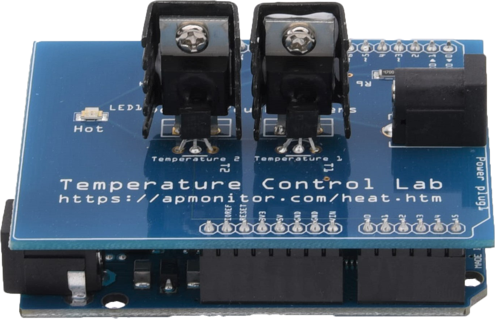

Programma del corso “Principi del controllo automatico”
Instructors: - Andrea Munafo (andrea.munafo@unipi.it) - Riccardo Costanzi (riccardo.costanzi@unipi.it)
Semestre: primavera 2024
Lezioni frontali: 3 sessioni (8 ore) / settimana per 8 settimane
- Martedì: 08:30 - 11:30
- Mercoledì: 10:30-13:30
- Giovedì: 11:30-13:30
Orario di ricevimento: Dopo le lezioni
Risultati dell’apprendimento
- Comprendere i principi fondamentali del controllo automatico, inclusi concetti come controllo del feedback, stabilità e controllabilità.
- Analizzare e progettare sistemi di controllo utilizzando modelli e strumenti matematici, comprese trasformate di Laplace, funzioni di trasferimento e diagrammi a blocchi.
- Applicare strategie di controllo a vari problemi ingegneristici del mondo reale, come il controllo della temperatura, il controllo della velocità, ecc.
- Valutare le prestazioni dei sistemi di controllo e identificare modi per migliorarli, inclusa la regolazione dei parametri di controllo e la modifica dei componenti del sistema.
- Sviluppare il pensiero critico e capacità di risoluzione dei problemi applicando principi di controllo a problemi ingegneristici nuovi e complessi e comunicando i risultati in modo efficace.
Sarai ben preparato per applicare i principi del controllo automatico a una varietà di campi dell’ingegneria, come la robotica, l’aerospaziale e la produzione, ecc.
Descrizione del corso
Questo corso introduce la progettazione di sistemi di controllo del feedback. Gli argomenti includono:
|
|
Tutorial e TCLab
La componente pratica del nostro corso prevede l’utilizzo del Laboratorio di controllo della temperatura (TCLab). Questo approccio pratico migliora la comprensione dei problemi di controllo.
|  |
Puoi acquistare TCLab su amazon.com per circa $ 50, ma acquistarlo non è obbligatorio per questo corso. Fornirò un numero limitato di schede e TCLab offre simulatori, che solitamente sono sufficienti per comprendere i concetti del corso.
Linee guida per l’utilizzo di TCLab: - Solo una tavola alla volta. - Pianifica il tuo tempo in TCLab utilizzando il foglio di calcolo del canale Teams del corso. Quando restituisci la tavola, assicurati di effettuare il check-out. La responsabilità del consiglio spetta all’ultima persona elencata come ad averlo sul foglio di calcolo.
Settimana 1: Introduzione e nozioni di base - I Quaderni: - Introduzione (01_intro) - Nozioni di base sul controllo del feedback (02_basics_of_feedback_control) - Obiettivi: - Comprendere i sistemi di controllo e la loro importanza nella tecnologia moderna. Discussioni su terminologie e concetti di base nei sistemi di controllo. Distinzione tra sistemi di controllo Open-Loop e Closed-Loop. Esplorare la struttura e le sfide dei sistemi di controllo del feedback. Approcci progettuali per sistemi di controllo feedback. Contesto storico ed evoluzione dei sistemi di controllo.
Integrazione TCLab: Familiarizzazione con il laboratorio e configurazione di base.
- Notebook:
00_Spacecraft_Thermal_Control_Systems,01_TCLab,01_Understanding_TCLab - Laboratorio:
02_TCLab_Lab_1_Coding_a_relay_controller
- Notebook:
Attività: Discussioni di gruppo sulle applicazioni reali dei sistemi di controllo.
Incarico:
- Installa Python. Python è un linguaggio di programmazione di uso generale. Viene utilizzato in questo corso per la dinamica e il controllo dei processi.
- Installa le librerie TCLab
Settimana 2: Modellazione matematica - I Quaderni: - Modelli matematici (03_introduction_to_control_problem), - Trasformate di Laplace e funzioni di trasferimento (04_dynamic_systems), - Risposta del sistema e teorema del valore finale; Caratteristiche dei sistemi del Primo e del Secondo Ordine (05_dynamic_response)
Obiettivi:
- Comprensione dei modelli matematici e delle funzioni di trasferimento nei sistemi di controllo. Esempi reali di sistemi di controllo: controllo del livello dell’acqua, sistema di guida dell’automobile, meccanismo del servosterzo idraulico, sistema di riscaldamento residenziale. Introduzione ai sistemi Multi-Input Multi-Output (MIMO). Analisi di sistemi di controllo complessi e dei loro componenti. Diagramma a blocchi della struttura di feedback di base.
Integrazione TCLab: Identificazione della modellazione
- Notebook:
03_System_Model_and_Identification_TCLab,04_Step_Testing_TCLab,05_Fitting_Step_Test_Data_to_Empirical_Models, (opzionale:05b_First-Order-Model-for-a-Single-Heater) - Laboratorio:
06_TCLab_Lab_2_Model_Identification
- Notebook:
Attività: Sessioni di problem solving per applicare modelli matematici a scenari teorici.
Compito: TCLab Simulate Step Response. Descrizione: Risposta dinamica della temperatura di un riscaldatore e sensore di temperatura con un Arduino
Settimana 3: risposta e feedback del sistema - I Quaderni: - Trasformata di Laplace inversa (06_inverse_laplace_transform) - Modellazione di sistemi dinamici: modellazione meccanica e termica (07_modeling_dynamic_systems) - Componenti di un controller (08_control_system_components) - Modelli di dispositivi e sistemi di controllo (09_Models_of_Control_Devices_and_Systems) - Hardware e alcuni casi di studio (10_hardware_and_case_studies, 11_AC_hardware_and_case_studies)
Obiettivi:
- Esplorare la risposta del sistema a vari input e il ruolo del feedback nei sistemi di controllo. Analisi dei sistemi nel dominio del tempo, introduzione alla modellistica dei sistemi fisici. Comprensione dell’hardware e casi di studio esemplari per la comprensione pratica. Applicazione della trasformata inversa di Laplace nei sistemi di controllo. Metodi di scomposizione di frazioni parziali per funzioni complesse.
Integrazione TCLab: dati i dati di un esperimento di identificazione, il compito successivo è trovare uno o più modelli che riproducano accuratamente la risposta del processo ai cambiamenti nella variabile manipolata. Questo notebook illustra un approccio pratico per adattare modelli di ordine inferiore ai dati di risposta al gradino.
- I Quaderni: -
- Laboratorio:
07_CLab_Lab_2_Fitting
Attività: Simulazioni interattive per dimostrare l’impatto del feedback sulla stabilità del sistema.
Compito: TCLab Convective Heat Transfer. Descrizione: Previsione del trasferimento di calore convettivo con un riscaldatore a transistor. !!!
Settimana 4: Stabilità e controllori - I Quaderni: - Una prima applicazione completa, sistema di controllo della temperatura (12_A_First_Complete_Application) - Controllo del feedback (13_Principles_of_Feedback_Control, 14_Feedback_systems_and_ir_effects) - Approfondimento sui sistemi di controllo: controllori PID (“Introduzione ai sistemi di controllo”) - Analisi della stabilità nei sistemi di controllo (16_Stability, 17_Stability_and_Routh_Criterion)
Obiettivi:
- Applicare le conoscenze teoriche ad un’applicazione completa del sistema di controllo. Studio dettagliato dei principi del controllo del feedback e delle loro applicazioni. Analisi degli effetti dei meccanismi di feedback nei sistemi di controllo. Rivisitazione dei concetti fondamentali nei sistemi di controllo. Studiare i concetti di stabilità nei sistemi e nei sistemi di feedback e le basi dei controllori PID. Studio dettagliato del criterio di Routh e della sua applicazione nella valutazione della stabilità.
Integrazione TCLab: Implementa i controller utilizzando TCLab.
- Notebook:
08_Relay_Control,09_PID_Control - Lab:
10_Lab-Assignment-PID-Control,11_Lab-Assignment-PI-Control
- Notebook:
Attività: Esercizi di gruppo per progettare regolatori PID di base per determinate specifiche.
Risorse: Modello TCLab FOPDT. Descrizione: Modello di risposta dinamica lineare alla temperatura di un riscaldatore e sensore di temperatura con un Arduino
Settimana 5: Strategie di controllo avanzate - I Quaderni: - Prestazioni dei sistemi di feedback (18_Performance_of_Feedback_Systems) - Progettazione del controllo del feedback: sistemi del secondo ordine (19_Design_of_feedback_control, 20_Design_of_feedback_control_continued) - Precisione allo stato stazionario e un esempio di progettazione completo (21_Steady_State_Accuracy_And_Design_Principles)
- Obiettivi:
- Studiare i concetti di prestazione nei sistemi di feedback. Valutare e migliorare le prestazioni dei sistemi di controllo del feedback. Introduzione alla precisione in regime stazionario. Discussioni iniziali su strategie e metodologie per la progettazione di sistemi di controllo del feedback efficaci.
- Integrazione TCLab: Continua con l’implementazione di semplici controller PID utilizzando TCLab.
Settimana 6: Strategie di controllo avanzate: luogo delle radici - I Quaderni: - Luogo delle radici (22_Compensator_Design_Using_Root_Locus, 23_Design_with_the_root_locus, 24_Compensators_and_Root_Locus)
Obiettivi:
- Comprendere il luogo delle radici e come utilizzarlo per progettare sistemi di controllo.
Integrazione TCLab: da confermare
Attività: Casi di studio di diverse strategie di controllo nei sistemi informatici.
Compito: Metodo grafico: da FOPDT a Step Test. Descrizione: Un sistema lineare del primo ordine con ritardo temporale è una descrizione empirica comune di molti processi dinamici. Il codice sorgente Python mostra come simulare uno step test e confrontarlo con un’approssimazione FOPDT.
Regressione TCLab FOPDT. Descrizione: Modello di risposta dinamica lineare alla temperatura di un riscaldatore e sensore di temperatura con un Arduino
Settimana 7: Strategie di controllo avanzate: risposta in frequenza - I Quaderni: - Risposta in frequenza e criterio di Nyquist (25_Introduction_to_Frequency_Domain_Analysis_in_Control_Systems) - Applicazione del criterio di Nyquist (26_Application_of_Nyquist_Stability_Criterion) - Stabilità relativa (27_The_Nyquist_Stability_Criterion_and_Relative_Stability) - Obiettivi: - Comprensione della Risposta in Frequenza, del Criterio di Nyquist e del concetto di stabilità relativa.
- Integrazione TCLab: Progetta e implementa un controller utilizzando TCLab.
- Attività: Casi di studio di diverse strategie di controllo nei sistemi informatici.
- Assegnazione: TCLab Controller Design. Descrizione: Progettare un controller per l’automazione della regolazione della temperatura su un setpoint. Il controller regola un riscaldatore per regolare la temperatura.
Settimana 8: grafici di Bode, controllo e commenti finali - I Quaderni: - Grafici di Bode (“28_Body_Plots”) - Prestazioni del sistema nel dominio della frequenza (29_Feedback_system_performance_based_on_frequency_response) - Modellazione del loop (30_Loop_Shaping)
Obiettivi:
- Comprensione dei grafici di Bode. Analisi delle prestazioni nel dominio della frequenza. Il loop shaping come strategia di controllo. Ripasso dei concetti chiave e preparazione all’esame finale.
Integrazione TCLab: Modellazione nello spazio degli stati con TCLab.
Attività: sessioni di domande e risposte, test simulati e discussioni di gruppo.
Incarico:
- Controllo solo proporzionale TCLab. Descrizione: TCLab con controllo solo proporzionale presenta un offset tra il setpoint e la temperatura misurata. Lo scopo di questa attività di laboratorio è quantificare e verificare l’offset.
- TCLab PI Controllo. Descrizione: TCLab con controllo proporzionale integrale (PI) elimina l’offset tra il setpoint e la temperatura misurata
- Controllo PID TCLab. Descrizione: TCLab con controllo proporzionale integrale derivativo (PID). Utilizzare l’ottimizzazione IMC e ITAE e confrontare la risposta
Libri di testo
Italiano - Bolzern, Scattolini, Schiavoni. Fondamenti di Controlli Automatici, 2a ed. McGraw-Hill.
- Ogata, Katsuhiko. Ingegneria dei controlli moderna. 4a ed. Prentice Hall, 2002.
Inglese
Ogata, Katsuhiko. Ingegneria dei controlli moderna. 4a ed. Prentice Hall, 2002.
M. Gopal, Principi e progettazione dei sistemi di controllo, McGraw-Hill (3a edizione).
Richard C. Dorf e Robert H. Bishop IE, Modern Control Systems (13a edizione).
Altri testi che potrebbero essere utili:
G. Marro, Controlli Automatici, Zanichelli
Franklin, Gene, J. David Powell e Abbas Emami-Naeini. Controllo del feedback dei sistemi dinamici. 6a ed. Prentice Hall, 2009. ISBN: 9780136019695.
Van de Vegte, John. Sistemi di controllo del feedback. 3a ed. Prentice Hall, 1994. ISBN: 9780002085069.
Kuo, Beniamino. Sistemi di controllo automatico. 8a ed. John Wiley & Sons, 2003. ISBN: 9780471381488.
Ogata, Katsuhiko. Risolvere problemi di ingegneria di controllo con MATLAB. Prentice Hall, 1993. ISBN: 9780130459077.
Il ruolo del software nello studio dei sistemi di feedback
L’utilizzo di un pacchetto software come Python o MATLAB è molto utile nello studio dei sistemi di feedback.
Il software può essere utilizzato al meglio inizialmente per controllare il lavoro che viene inizialmente eseguito tradizionalmente con carta e matita.
Ciò è particolarmente utile quando si verificano i grafici polari (grafici di Nyquist), i diagrammi di Bode e i luoghi delle radici quando si tenta per la prima volta di disegnare queste funzioni.
Le risposte al gradino nel dominio del tempo possono essere esaminate per costruire un senso intuitivo delle relazioni tra il comportamento nel dominio del tempo e della frequenza.
Le approssimazioni semplificate che spesso vengono fatte durante l’esecuzione dei progetti preliminari possono essere verificate per verificarne la validità utilizzando Python.
È possibile studiare problemi più complessi con un pacchetto di progettazione assistita dal computer senza l’enorme onere di eseguire calcoli estesi.
Suggeriamo a tutti di familiarizzare con l’uso di Python o MATLAB.
Ricordare che il computer deve aiutare a raggiungere la comprensione e dovrebbe essere utilizzato in modo intelligente come strumento di ingegneria.
L’obiettivo è che tu acquisisca una comprensione approfondita della teoria del feedback.
Domande frequenti (FAQ)
- vedere il notebook
00_FAQ.ipynb